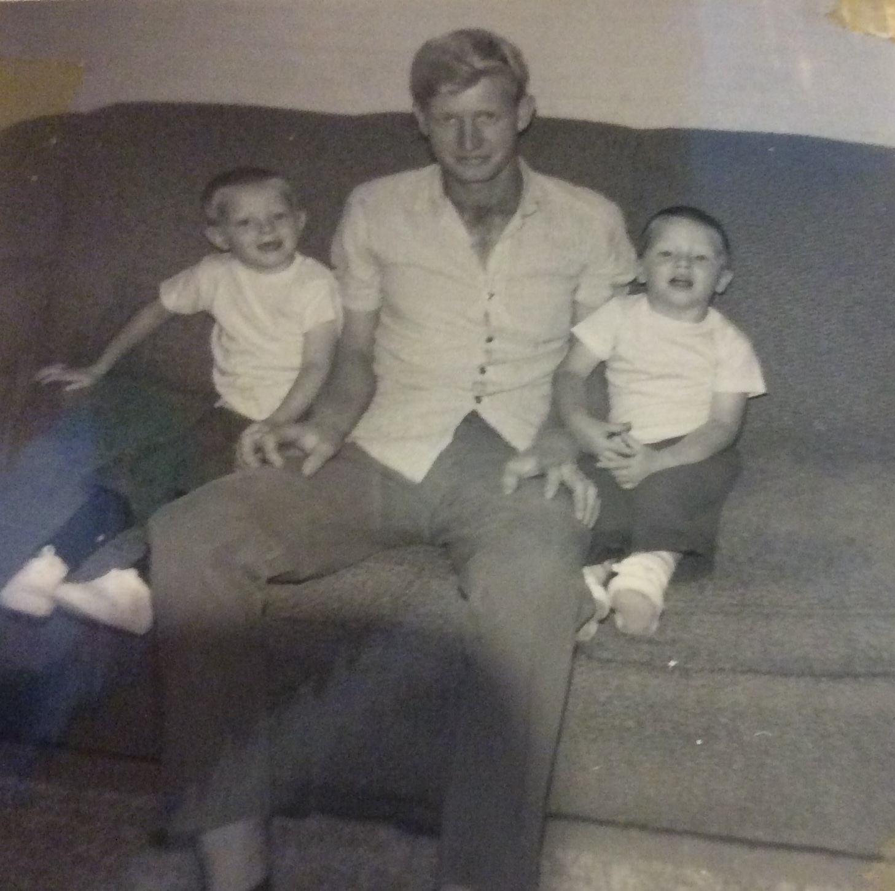
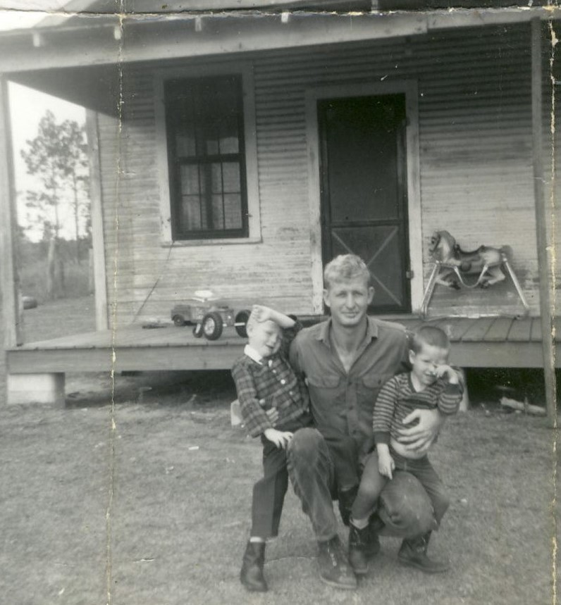
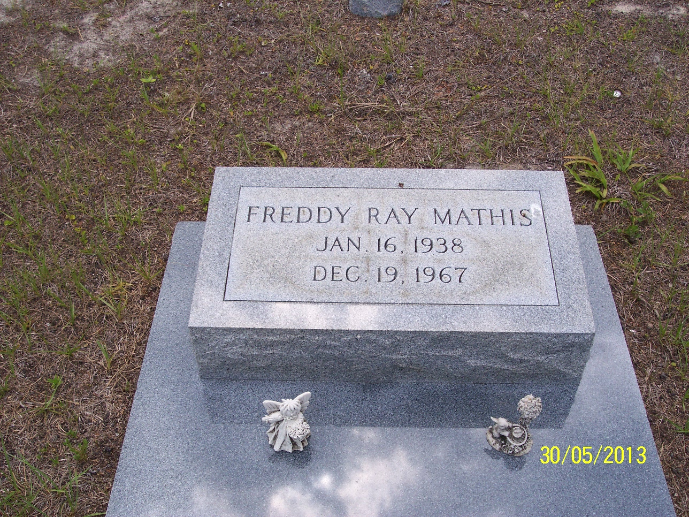

Freddy Ray Mathis
1938–1967
Life Events
Born: 1938
Family
Spouse:
Children
Military Service
No military service information has been added.
Biography
Freddy Ray Mathis was born on January 16, 1938.
In January 1956, at approximately 18 years of age, Freddy was serving as a private in the United States Marine Corps. Marine Corps muster rolls identify him as a recruit assigned to the 2nd Recruit Training Battalion at Marine Corps Recruit Depot Parris Island, South Carolina.
A 1956 Perry, Florida, city directory lists Freddy, under the name Freddie R. Mathis, as a member of the United States Marine Corps residing at 801 East Quail Street.
Freddy lived on the same street as Dewey and Ollie Singletary, who resided at 601 East Quail Street. Ollie was the older sister of Freddy's wife, Evelyn Herrin.
According to a family recollection, Freddy played basketball with a Arthur Singletary Sr., the son of Dewey and Ollie Singletary. Whether they played together on a school basketball team or recreationally in their neighborhood has not yet been established.
Freddy married Evelyn Herrin (1934–2011), daughter of William Levi Herrin and Laura Etta Palmer. They had two sons, Connie Ray Mathis and Richard Mathis, known as Ricky.
Freddy died on December 19, 1967, at the age of 29. His obituary appeared in The Florida Times-Union on December 21, 1967. He was buried at Woodlawn Cemetery in Perry, Taylor County, Florida.
Photos


Grave & Burial

Woodlawn Cemetery, Perry, Taylor County, Florida
Sources
-
1956 Perry, Florida, City Directory — Freddie R. Mathis
Type: City DirectoryThe 1956 Perry, Florida, city directory lists Freddie R. Mathis as residing at 801 East Quail Street in Perry, Taylor County, Florida. His employment or affiliation is recorded as USMC, identifying him with the United States Marine Corps. The entry appears on page 53 of the directory.
Location: Perry, Taylor County, Florida, United States
Supports: Residence of Freddie R. Mathis at 801 East Quail Street in Perry, Florida, in 1956, United States Marine Corps affiliation of Freddie R. Mathis
-
U.S. Marine Corps Muster Roll — Freddy R. Mathis, January 1956
Type: Military RecordUnited States Marine Corps muster roll for January 1956 identifying Freddy R. Mathis as a private assigned to recruits of the 2nd Recruit Training Battalion at Parris Island, South Carolina.
Location: Marine Corps Recruit Depot Parris Island, South Carolina, United States
Supports: United States Marine Corps service, Rank of Private in January 1956, Assignment to the 2nd Recruit Training Battalion, Presence at Marine Corps Recruit Depot Parris Island in January 1956
-
Obituary of Freddy Mathis — The Florida Times-Union
Type: ObituaryThe obituary of Freddy Mathis, age 29, identifies his widow as Evelyn and names two sons, Connie and Ricky. It also identifies a stepdaughter, Mrs. Debra George. Freddy died on December 19, 1967. The obituary lists his parents as Mr. and Mrs. E. R. Mathis and names five brothers and three sisters. Funeral services were scheduled for December 21, 1967, with burial at Woodlawn Cemetery.
Location: Perry, Taylor County, Florida
Supports: Death of Freddy Mathis on December 19, 1967, Marriage of Freddy Mathis and Evelyn Herrin, Identification of Connie and Ricky as Freddy Mathis's sons, Identification of Debra George as Freddy Mathis's stepdaughter, Identification of Freddy Mathis's parents and siblings